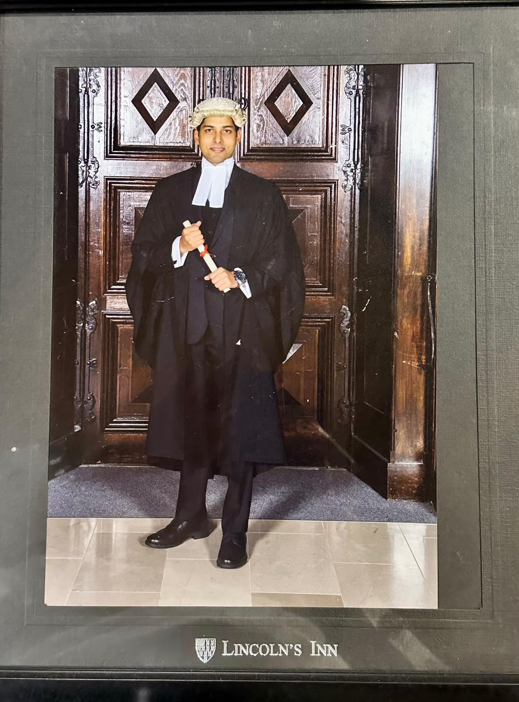

Barrister and Advocate High Court, practising from Qaiser & Metlo Law Chambers at Boat Basin, Clifton, Karachi, with a practice before the Sindh High Court that spans constitutional, corporate, banking, taxation and admiralty law.

| Called to the Bar | The Honourable Society of Lincoln's Inn, London |
| Education | LL.M, Gold Medalist |
| Background | Accounting |
| Position | Partner, Qaiser & Metlo Law Chambers |
| Enrolment | Advocate High Court, Sindh |
| Chambers | Boat Basin, Clifton, Karachi |
| Reported Cases | 13 reported judgments |
Fayaz Ali Metlo is a Partner at Qaiser & Metlo Law Chambers (QMLC), a Karachi firm based at Boat Basin, Clifton. His route to the Bar ran through accounting before law: he completed his LL.M with a gold medal and was called to the Bar at Lincoln's Inn, London. The combination is visible in his reported work, which is weighted toward banking and finance, taxation references, company disputes and admiralty, alongside constitutional petitions and civil litigation.
Beyond the courtroom, he records legal awareness videos for a growing public audience on TikTok, and he is a candidate for General Secretary of the Karachi Bar Association in the 2026-27 elections, standing on experience, dedication and integrity.
Appearances recorded from Sindh High Court order sheets. Reported judgments are listed in full on the Reported Cases page.